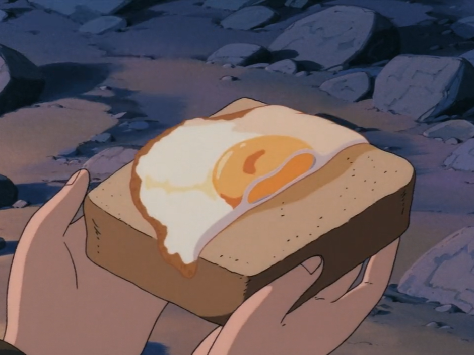

Thyme-Infused Egg on Toast
A cozy clouds-meal best enjoyed fireside. Sharing with robots is permitted!
This thyme-infused egg served on a thick slice of bread is a great fireside meal when you’re starving, especially in a faraway place hidden in the clouds.
Yield: 2 servings
Prep time: 3 minutes
Cook time: 10 minutes
Ingredients
- 2 slices fresh white bread or bread of choice
- 2 tbsp salted butter
- 1 tbsp olive oil
- 2 sprigs fresh thyme, divided
- 2 large eggs
- Salt and pepper, to taste
- 1 clove garlic, peeled

🌿 A sky-high breakfast fit for adventurers and machines alike.
Instructions
- Pop the bread into the toaster.
- While the bread is toasting, place the butter and olive oil in a medium pan over medium heat. Strip the leaves from the thyme stalks and set aside.
- Once the butter has melted, add the thyme leaves (reserving a pinch for garnishing) and sauté until the mixture is aromatic. This should take a few seconds to 1 minute.
- Crack the eggs into the same pan and cook, spooning the thyme-infused butter over the eggs until the egg whites are set, approximately 3 to 4 minutes.
- Once the egg whites have set, turn off the heat and cover the pan with a lid for 1 minute. This will steam the egg yolk and cover it with a thin white film. Season the eggs with salt and pepper.
- Once the slices of bread are golden brown, rub the raw clove of garlic lightly on the crusty bread. Using a spatula, transfer the eggs onto the slices of bread. Make sure to spoon the remaining butter from the pan onto the bread.
- Garnish with the remaining thyme.
- Divide the toast between 2 small plates, serve, and enjoy immediately.
Tips
- 🎯 To get a picture-perfect, fully cooked egg on toast, use a toothpick and carefully peel away the thin white film from the egg yolk.
- 🌿 Substitute the thyme by adding chopped fresh basil, parsley, or lemon zest to your pan of melted butter before frying your eggs.